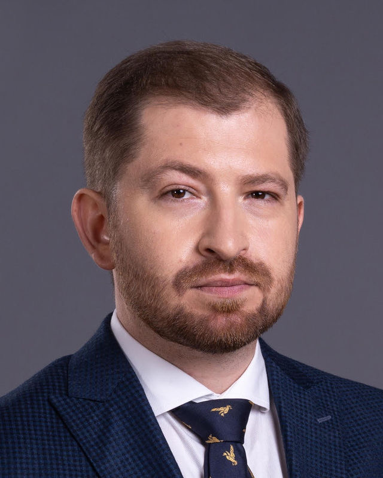

Єгор Муратов
Засновник, керуючий партнер
Мій досвід роботи дозволяє бути впевненим, що інструмент страхування в Україні працює. Я вірю, що страхові брокери, представляючи частину страхового ринку, несуть відповідальність за ефективність використання цього інструменту.
Сертифікати і освітаУніверситет Technion, Хайфа · Project Management
Інститут післядипломної освіти та бізнесу · Курс організації діяльності страхових та перестрахових брокерів № 7963 від 09.04.2014